7. Hydrology¶
The model parameterizes interception, throughfall, canopy drip, snow
accumulation and melt, water transfer between snow layers, infiltration,
evaporation, surface runoff, sub-surface drainage, redistribution within
the soil column, and groundwater discharge and recharge to simulate
changes in canopy water  , surface water
, surface water
 , snow water
, snow water  , soil water
, soil water
 , and soil ice
, and soil ice  ,
and water in the unconfined aquifer
,
and water in the unconfined aquifer  (all in kg
m-2 or mm of H2O) (Figure 7.1).
(all in kg
m-2 or mm of H2O) (Figure 7.1).
The total water balance of the system is
(1)¶
where  is the liquid part of precipitation,
is the liquid part of precipitation,
 is the solid part of precipitation,
is the solid part of precipitation,  is
ET from vegetation (Chapter 5),
is
ET from vegetation (Chapter 5),  is ground evaporation
(Chapter 5),
is ground evaporation
(Chapter 5),  is surface runoff (section 7.3),
is surface runoff (section 7.3),
 is runoff from surface water storage (section 7.3),
is runoff from surface water storage (section 7.3),
 is sub-surface drainage (section 7.6),
is sub-surface drainage (section 7.6),
 and
and  are liquid and solid runoff
from glaciers, wetlands, and lakes, and runoff from other surface types
due to snow capping (section 7.7) (all in kg m-2
s-1),
are liquid and solid runoff
from glaciers, wetlands, and lakes, and runoff from other surface types
due to snow capping (section 7.7) (all in kg m-2
s-1),  is the number of soil layers
(note that hydrology calculations are only done over soil layers 1 to
; ground levels
is the number of soil layers
(note that hydrology calculations are only done over soil layers 1 to
; ground levels  to
to
 are currently hydrologically inactive; Lawrence et
al. 2008) and
are currently hydrologically inactive; Lawrence et
al. 2008) and  is the time step (s).
is the time step (s).
Figure 7.1. Hydrologic processes represented in CLM.

7.1. Canopy Water¶
Precipitation is either intercepted by the canopy, falls directly to the
snow/soil surface (throughfall), or drips off the vegetation (canopy
drip). Interception by vegetation  (kg
m-2 s-1) does not distinguish between
liquid and solid phases
(kg
m-2 s-1) does not distinguish between
liquid and solid phases
(2)¶![q_{intr} =\alpha \left(q_{rain} +q_{sno} \right)\left\{1-\exp \left[-0.5\left(L+S\right)\right]\right\}](../../_images/math/5fa8bea9e0b141537513c612b10fa16ef232037a.png)
where  and
and  are the exposed leaf and stem area index,
respectively (section 2.1.4), and
are the exposed leaf and stem area index,
respectively (section 2.1.4), and  scales
interception from point to grid cell (Lawrence et al. 2007). Throughfall
(kg m-2 s-1), however, is divided into
liquid and solid phases reaching the ground (soil or snow surface) as
scales
interception from point to grid cell (Lawrence et al. 2007). Throughfall
(kg m-2 s-1), however, is divided into
liquid and solid phases reaching the ground (soil or snow surface) as
(3)¶![q_{thru,\, liq} =q_{rain} \left[1-\alpha \left\{1-\exp \left[-0.5\left(L+S\right)\right]\right\}\right]](../../_images/math/4ef6df3e75d9619db9df153725156d1e091f69cf.png)
(4)¶![q_{thru,\, ice} =q_{sno} \left[1-\alpha \left\{1-\exp \left[-0.5\left(L+S\right)\right]\right\}\right].](../../_images/math/cbb17ba5b504ccd249d2e917425555281ad0d0cf.png)
Similarly, the canopy drip is
(5)¶
(6)¶
where
(7)¶
is the canopy water after accounting for interception,
 is the canopy water from the previous time step,
and
is the canopy water from the previous time step,
and  (kg m-2) is the maximum
amount of water the canopy can hold
(kg m-2) is the maximum
amount of water the canopy can hold
(8)¶
The maximum storage of solid water is assumed to be the same as that of
liquid water,  kg m-2 (Dickinson et al.
1993). The canopy water is updated as
kg m-2 (Dickinson et al.
1993). The canopy water is updated as
(9)¶
where  is the flux of water vapor from stem and leaf
surfaces (Chapter 5). The total rate of liquid and solid precipitation
reaching the ground is then
is the flux of water vapor from stem and leaf
surfaces (Chapter 5). The total rate of liquid and solid precipitation
reaching the ground is then
(10)¶
(11)¶
Solid precipitation reaching the soil or snow surface,
 , is added immediately to the snow pack
(section 7.2). The liquid part,
, is added immediately to the snow pack
(section 7.2). The liquid part,  is
added after surface fluxes (Chapter 5) and snow/soil temperatures
(Chapter 6) have been determined.
is
added after surface fluxes (Chapter 5) and snow/soil temperatures
(Chapter 6) have been determined.
The wetted fraction of the canopy (stems plus leaves), which is required for the surface albedo (section 3.1) and surface flux (Chapter 5) calculations is (Dickinson et al. 1993)
(12)¶![f_{wet} =\left\{\begin{array}{l} {\left[\frac{W_{can} }{p\left(L+S\right)} \right]^{{2\mathord{\left/ {\vphantom {2 3}} \right. \kern-\nulldelimiterspace} 3} } \le 1\qquad L+S>0} \\ {0\qquad L+S=0} \end{array}\right\}](../../_images/math/dee0aa0d8f13b9b599e2beaf3151503a89406c0a.png)
while the fraction of the canopy that is dry and transpiring is
(13)¶
7.2. Snow¶
The parameterizations for snow are based primarily on Anderson (1976),
country-regionplaceJordan (1991), and Dai and Zeng (1997). The snowpack
can have up to five layers. These layers are indexed in the Fortran code
as  where layer
where layer  is the snow layer
next to the top soil layer and layer
is the snow layer
next to the top soil layer and layer  is the top layer of a
five-layer snow pack. Since the number of snow layers varies according
to the snow depth, we use the notation
is the top layer of a
five-layer snow pack. Since the number of snow layers varies according
to the snow depth, we use the notation  to describe the top
layer of snow for the variable layer snow pack, where
to describe the top
layer of snow for the variable layer snow pack, where  is the
negative of the number of snow layers. Refer to Figure 7.2 for an
example of the snow layer structure for a three layer snow pack.
is the
negative of the number of snow layers. Refer to Figure 7.2 for an
example of the snow layer structure for a three layer snow pack.
Figure 7.2. Example of three layer snow pack ( ).
).
Shown are three snow layers,  ,
,  , and
. The layer node depth is
, and
. The layer node depth is  , the layer interface is
, the layer interface is
 , and the layer thickness is
, and the layer thickness is  .
.

The state variables for snow are the mass of water  (kg m-2), mass of ice
(kg m-2), mass of ice  (kg
m-2), layer thickness
(kg
m-2), layer thickness  (m), and
temperature
(m), and
temperature  (Chapter 6). The water vapor phase is
neglected. Snow can also exist in the model without being represented by
explicit snow layers. This occurs when the snowpack is less than a
specified minimum snow depth (
(Chapter 6). The water vapor phase is
neglected. Snow can also exist in the model without being represented by
explicit snow layers. This occurs when the snowpack is less than a
specified minimum snow depth ( m). In this case,
the state variable is the mass of snow
m). In this case,
the state variable is the mass of snow  (kg
m-2).
(kg
m-2).
Section 7.2.1 describes the calculation of fractional snow covered area, which is used in the surface albedo calculation (Chapter 3) and the surface flux calculations (Chapter 5). The following two sections (7.2.2 and 7.2.3) describe the ice and water content of the snow pack assuming that at least one snow layer exists. Section 7.2.4 describes how black and organic carbon and mineral dust particles are represented within snow, including meltwater flushing. See section 7.2.5 for a description of how a snow layer is initialized.
7.2.1. Snow Covered Area Fraction¶
The fraction of the ground covered by snow,  , is based
on the method of Swenson and Lawrence (2012). Because the processes
governing snowfall and snowmelt differ, changes in are
calculated separately for accumulation and depletion. When snowfall
occurs, is updated as
, is based
on the method of Swenson and Lawrence (2012). Because the processes
governing snowfall and snowmelt differ, changes in are
calculated separately for accumulation and depletion. When snowfall
occurs, is updated as
(14)¶
where  is a constant whose default value is 0.1,
is a constant whose default value is 0.1,
 is the amount of new snow,
is the amount of new snow,
 is the updated snow covered fraction (SCF), and
is the updated snow covered fraction (SCF), and
 is the SCF from the previous time step.
is the SCF from the previous time step.
When snow melt occurs, is calculated from the depletion
curve
(15)¶
where  is the ratio of to the maximum
accumulated snow
is the ratio of to the maximum
accumulated snow  , and
, and  is a
parameter that depends on the topographic variability within the grid
cell. Whenever reaches zero, is
reset to zero. The depletion curve shape parameter is defined as
is a
parameter that depends on the topographic variability within the grid
cell. Whenever reaches zero, is
reset to zero. The depletion curve shape parameter is defined as
(16)¶
The standard deviation of the elevation within a grid cell,
 , is calculated from a high resolution DEM (a
1km DEM is used for CLM).
, is calculated from a high resolution DEM (a
1km DEM is used for CLM).
7.2.2. Ice Content¶
The conservation equation for mass of ice in snow layers is
(17)¶
where  is the rate of ice accumulation from
precipitation or frost or the rate of ice loss from sublimation (kg
m-2 s-1) in the top layer and
is the rate of ice accumulation from
precipitation or frost or the rate of ice loss from sublimation (kg
m-2 s-1) in the top layer and
 is the change in ice due to phase change (melting rate) (section 6.2).
The term is computed in two steps as
is the change in ice due to phase change (melting rate) (section 6.2).
The term is computed in two steps as
(18)¶
where  is the rate of solid precipitation
reaching the ground (section 7.1) and
is the rate of solid precipitation
reaching the ground (section 7.1) and  and
and
 are gains due to frost and losses due to sublimation,
respectively (section 5.4). In the first step, immediately after
has been determined after accounting for
interception (section 7.1), a new snow depth
are gains due to frost and losses due to sublimation,
respectively (section 5.4). In the first step, immediately after
has been determined after accounting for
interception (section 7.1), a new snow depth  (m) is
calculated from
(m) is
calculated from
(19)¶
where
(20)¶
and  is the bulk density of newly fallen snow (kg
m-3) (CityplaceAnderson 1976)
is the bulk density of newly fallen snow (kg
m-3) (CityplaceAnderson 1976)
(21)¶
where  is the atmospheric temperature (K), and
is the atmospheric temperature (K), and
 is the freezing temperature of water (K) (Table 2.6). The
mass of snow is
is the freezing temperature of water (K) (Table 2.6). The
mass of snow is
(22)¶
The ice content of the top layer and the layer thickness are updated as
(23)¶
(24)¶
Since wetlands are modeled as columns of water (no soil), snow is not
allowed to accumulate if the surface temperature is above freezing
( ). In this case, the incoming solid precipitation
is assigned to the runoff term (section 7.7).
). In this case, the incoming solid precipitation
is assigned to the runoff term (section 7.7).
In the second step, after surface fluxes and snow/soil temperatures have
been determined (Chapters 5 and 6),  is updated
for frost or sublimation as
is updated
for frost or sublimation as
(25)¶
If  upon solution of equation , the ice
content is reset to zero and the liquid water content
upon solution of equation , the ice
content is reset to zero and the liquid water content
 is reduced by the amount required to bring
is reduced by the amount required to bring
 up to zero.
up to zero.
The snow water equivalent is capped to not exceed 1000
kg m-2. If the addition of were to
result in  kg m-2, the frost term
is instead added to the ice runoff term
kg m-2, the frost term
is instead added to the ice runoff term
 (section 7.7).
(section 7.7).
7.2.3. Water Content¶
The conservation equation for mass of water in snow layers is
(26)¶
where  is the flow of liquid water into layer
is the flow of liquid water into layer
 from the layer above,
from the layer above,  is the flow of
water out of layer to the layer below,
is the flow of
water out of layer to the layer below,
 is the change in liquid water due to phase change (melting rate)
(section 6.2). For the top snow layer only,
is the change in liquid water due to phase change (melting rate)
(section 6.2). For the top snow layer only,
(27)¶
where  is the rate of liquid precipitation
reaching the snow (section 7.1),
is the rate of liquid precipitation
reaching the snow (section 7.1),  is the evaporation of
liquid water and
is the evaporation of
liquid water and  is the liquid dew (section 5.4).
After surface fluxes and snow/soil temperatures have been determined
(Chapters 5 and 6), is updated for the liquid
precipitation reaching the ground and dew or evaporation as
is the liquid dew (section 5.4).
After surface fluxes and snow/soil temperatures have been determined
(Chapters 5 and 6), is updated for the liquid
precipitation reaching the ground and dew or evaporation as
(28)¶
When the liquid water within a snow layer exceeds the layer’s holding
capacity, the excess water is added to the underlying layer, limited by
the effective porosity ( ) of the layer. The flow
of water is assumed to be zero (
) of the layer. The flow
of water is assumed to be zero ( ) if the
effective porosity of either of the two layers
(
) if the
effective porosity of either of the two layers
( ) is
less than
) is
less than  , the water impermeable volumetric
water content. Thus, water flow between layers, ,
for layers
, the water impermeable volumetric
water content. Thus, water flow between layers, ,
for layers  , is initially calculated as
, is initially calculated as
(29)¶![q_{liq,\, i} =\frac{\rho _{liq} \left[\theta _{liq,\, i} -S_{r} \left(1-\theta _{ice,\, i} \right)\right]f_{sno} \Delta z_{i} }{\Delta t} \ge 0](../../_images/math/39bbb51227fb2a4c18fa4c2932c9714bea325f1a.png)
where the volumetric liquid water  and ice
and ice
 contents are
contents are
(30)¶
(31)¶
and  is the irreducible water saturation (snow
holds a certain amount of liquid water due to capillary retention after
drainage has ceased (Anderson 1976)). The water holding capacity of the
underlying layer limits the flow of water
calculated in equation , unless the underlying layer is the surface soil
layer, as
is the irreducible water saturation (snow
holds a certain amount of liquid water due to capillary retention after
drainage has ceased (Anderson 1976)). The water holding capacity of the
underlying layer limits the flow of water
calculated in equation , unless the underlying layer is the surface soil
layer, as
(32)¶![q_{liq,\, i} \le \frac{\rho _{liq} \left[1-\theta _{ice,\, i+1} -\theta _{liq,\, i+1} \right]\Delta z_{i+1} }{\Delta t} \qquad i=snl+1,\ldots ,-1.](../../_images/math/146557ec16631babd217c6611d9c5b82aa1658b2.png)
The liquid water content  is updated as
is updated as
(33)¶
Equations - are solved sequentially from top ( ) to
bottom () snow layer in each time step. The total flow of
liquid water reaching the soil surface is then
) to
bottom () snow layer in each time step. The total flow of
liquid water reaching the soil surface is then  which is used in the calculation of surface runoff and infiltration
(section 7.3).
which is used in the calculation of surface runoff and infiltration
(section 7.3).
7.2.4. Black and organic carbon and mineral dust within snow¶
Particles within snow originate from atmospheric aerosol deposition
( in Table 2.3 (kg m-2 s-1)
and influence snow radiative transfer (sections 3.2.1, 3.2.2, and
3.3.3). Particle masses and mixing ratios are represented with a simple
mass-conserving scheme. The model maintains masses of the following
eight particle species within each snow layer: hydrophilic black carbon,
hydrophobic black carbon, hydrophilic organic carbon, hydrophobic
organic carbon, and four species of mineral dust with the following
particle sizes: 0.1-1.0, 1.0-2.5, 2.5-5.0, and 5.0-10.0
in Table 2.3 (kg m-2 s-1)
and influence snow radiative transfer (sections 3.2.1, 3.2.2, and
3.3.3). Particle masses and mixing ratios are represented with a simple
mass-conserving scheme. The model maintains masses of the following
eight particle species within each snow layer: hydrophilic black carbon,
hydrophobic black carbon, hydrophilic organic carbon, hydrophobic
organic carbon, and four species of mineral dust with the following
particle sizes: 0.1-1.0, 1.0-2.5, 2.5-5.0, and 5.0-10.0  .
Each of these species has unique optical properties (Table 3.5) and
meltwater removal efficiencies (Table 7.1).
.
Each of these species has unique optical properties (Table 3.5) and
meltwater removal efficiencies (Table 7.1).
The black carbon and organic carbon deposition rates described in Table 2.3 are combined into four categories as follows
(34)¶
(35)¶
(36)¶
(37)¶
Deposited particles are assumed to be instantly mixed (homogeneously)
within the surface snow layer and are added after the inter-layer water
fluxes are computed (section 7.2.3) so that some aerosol is in the top
layer after deposition and is not immediately washed out before
radiative calculations are done. Particle masses are then redistributed
each time step based on meltwater drainage through the snow column
(section 7.2.3) and snow layer combination and subdivision (section
7.2.7). The change in mass of each of the particle species
 (kg m-2) is
(kg m-2) is
(38)¶![\Delta m_{sp,\, i} =\left[k_{sp} \left(q_{liq,\, i-1} c_{sp,\, i-1} -q_{liq,\, i} c_{i} \right)+D_{sp} \right]\Delta t](../../_images/math/4c6eecd0c2b546b90ac00e4eb021536a0fdadf62.png)
where  is the meltwater scavenging efficiency that is
unique for each species (Table 7.1), is the flow
of liquid water into layer from the layer above,
is the flow of water out of layer into
the layer below (kg m-2 s-1) (section
7.2.3),
is the meltwater scavenging efficiency that is
unique for each species (Table 7.1), is the flow
of liquid water into layer from the layer above,
is the flow of water out of layer into
the layer below (kg m-2 s-1) (section
7.2.3),  and
and  are the particle
mass mixing ratios in layers
are the particle
mass mixing ratios in layers  and (kg
kg-1), is the atmospheric deposition rate
(zero for all layers except layer ), and
is the model time step (s). The particle mass mixing ratio is
and (kg
kg-1), is the atmospheric deposition rate
(zero for all layers except layer ), and
is the model time step (s). The particle mass mixing ratio is
(39)¶
Values of are partially derived from experiments
published by Conway et al. (1996). Particles masses are re-distributed
proportionately with snow mass when layers are combined or divided, thus
conserving particle mass within the snow column. The mass of particles
carried out with meltwater through the bottom snow layer is assumed to
be permanently lost from the snowpack, and is not maintained within the
model.
Table 7.1. Meltwater scavenging efficiency for particles within snow
| Species | |
|---|---|
| Hydrophilic black carbon | 0.20 |
| Hydrophobic black carbon | 0.03 |
| Hydrophilic organic carbon | 0.20 |
| Hydrophobic organic carbon | 0.03 |
| Dust species 1 (0.1-1.0 ) |
0.02 |
| Dust species 2 (1.0-2.5 ) |
0.02 |
| Dust species 3 (2.5-5.0 ) |
0.01 |
| Dust species 4 (5.0-10.0 ) |
0.01 |
7.2.5. Initialization of snow layer¶
If there are no existing snow layers ( ) but
) but
 m after accounting for solid precipitation
, then a snow layer is initialized (
m after accounting for solid precipitation
, then a snow layer is initialized ( ) as
follows
) as
follows
(40)¶
7.2.6. Snow Compaction¶
Snow compaction is initiated after the soil hydrology calculations
[surface runoff (section 7.3), infiltration (section 7.3), soil water
(section 7.4), groundwater-soilwater interactions (section 7.6)] are
complete. Compaction of snow includes three types of processes:
destructive metamorphism of new snow (crystal breakdown due to wind or
thermodynamic stress); snow load or overburden (pressure); and melting
(changes in snow structure due to melt-freeze cycles plus changes in
crystals due to liquid water). The total fractional compaction rate for
each snow layer  (s-1) is the sum of the
three compaction processes
(s-1) is the sum of the
three compaction processes
(41)¶
Compaction is not allowed if the layer is saturated
(42)¶
or if the ice content is below a minimum value
( ).
).
Compaction as a result of destructive metamorphism  (s-1) is temperature dependent (CityplaceAnderson 1976)
(s-1) is temperature dependent (CityplaceAnderson 1976)
(43)¶![C_{R1,\, i} =\left[\frac{1}{\Delta z_{i} } \frac{\partial \Delta z_{i} }{\partial t} \right]_{metamorphism} =-c_{3} c_{1} c_{2} \exp \left[-c_{4} \left(T_{f} -T_{i} \right)\right]](../../_images/math/5873625d9fd5ccccbe76ee34f64abd450c6f2765.png)
where  (s-1) is the fractional compaction rate for
(s-1) is the fractional compaction rate for  ,
,  K-1, and
K-1, and
(44)¶![c_{1} & = 1\qquad \frac{w_{ice,\, i} }{f_{sno} \Delta z_{i} } \le 100{\rm \; kg\; m}^{{\rm -3}} \\
c_{1} & = \exp \left[-0.046\left(\frac{w_{ice,\, i} }{f_{sno} \Delta z_{i} } -100\right)\right]\qquad \frac{w_{ice,\, i} }{f_{sno} \Delta z_{i} } >100{\rm \; kg\; m}^{{\rm -3}} \\
c_{2} & = 2\qquad \frac{w_{liq,\, i} }{f_{sno} \Delta z_{i} } >0.01 \\
c_{2} & = 1\qquad \frac{w_{liq,\, i} }{f_{sno} \Delta z_{i} } \le 0.01](../../_images/math/6ebbd8205790f82a31c409e52c5131f3f8f34f78.png)
where
 and
and
 are the bulk densities of liquid water and ice (kg m-3).
are the bulk densities of liquid water and ice (kg m-3).
The compaction rate as a result of overburden  (s-1) is a linear function of the snow load pressure
(s-1) is a linear function of the snow load pressure  (kg m-2) (CityplaceAnderson 1976)
(kg m-2) (CityplaceAnderson 1976)
(45)¶![C_{R2,\, i} =\left[\frac{1}{\Delta z_{i} } \frac{\partial \Delta z_{i} }{\partial t} \right]_{overburden} =-\frac{P_{s,\, i} }{\eta }](../../_images/math/17721c9ef18e9a20873566de5e7ef34bf7eeb1b1.png)
where  is a viscosity coefficient (kg s m-2) that varies with density and temperature as
is a viscosity coefficient (kg s m-2) that varies with density and temperature as
(46)¶![\eta =\eta _{0} \exp \left[c_{5} \left(T_{f} -T_{i} \right)+c_{6} \frac{w_{ice,\, i} }{f_{sno} \Delta z_{i} } \right]](../../_images/math/0882dca28398fba8aaee063ad93240e3c03c2eb0.png)
where  kg s m-2, and
kg s m-2, and
 K-1,
K-1,  m3 kg-1 are constants. The snow load
pressure is calculated for each layer as the sum of
the ice
m3 kg-1 are constants. The snow load
pressure is calculated for each layer as the sum of
the ice  and liquid water contents
of the layers above plus half the ice and liquid
water contents of the layer being compacted
and liquid water contents
of the layers above plus half the ice and liquid
water contents of the layer being compacted
(47)¶
The compaction rate due to melting  (s-1) is taken to be the ratio of the change in snow ice
mass after the melting to the mass before melting
(s-1) is taken to be the ratio of the change in snow ice
mass after the melting to the mass before melting
(48)¶![C_{R3,\, i} =\left[\frac{1}{\Delta z_{i} } \frac{\partial \Delta z_{i} }{\partial t} \right]_{melt} =-\frac{1}{\Delta t} \max \left(0,\frac{W_{sno,\, i}^{n} -W_{sno,\, i}^{n+1} }{W_{sno,\, i}^{n} } \right)](../../_images/math/5ddc185512a1dccafbe918aa647b40e000e4d151.png)
and melting is identified during the phase change calculations (section
6.2). Because snow depth is defined as the average depth of the snow
covered area, the snow depth must also be updated for changes in
.
(49)¶![C_{R4,\, i} =\left[\frac{1}{\Delta z_{i} } \frac{\partial \Delta z_{i} }{\partial t} \right]_{fsno} =-\frac{1}{\Delta t} \max \left(0,\frac{f_{sno,\, i}^{n} -f_{sno,\, i}^{n+1} }{f_{sno,\, i}^{n} } \right)](../../_images/math/f466d1e004093a065748b3c8a2bff0c6573ed129.png)
The snow layer thickness after compaction is then
(50)¶
7.2.7. Snow Layer Combination and Subdivision¶
After the determination of snow temperature including phase change (Chapter 6), snow hydrology (sections 7.2.2, 7.2.3, and 7.2.4), and the compaction calculations , the number of snow layers is adjusted by either combining or subdividing layers. The combination and subdivision of snow layers is based on Jordan (1991).
7.2.7.1. 7.2.7.1 Combination¶
If a snow layer has nearly melted or if its thickness
is less than the prescribed minimum thickness
 (Table 7.2), the layer is combined with a
neighboring layer. The overlying or underlying layer is selected as the
neighboring layer according to the following rules
(Table 7.2), the layer is combined with a
neighboring layer. The overlying or underlying layer is selected as the
neighboring layer according to the following rules
- If the top layer is being removed, it is combined with the underlying layer
- If the underlying layer is not snow (i.e., it is the top soil layer), the layer is combined with the overlying layer
- If the layer is nearly completely melted, the layer is combined with the underlying layer
- If none of the above rules apply, the layer is combined with the thinnest neighboring layer.
A first pass is made through all snow layers to determine if any layer
is nearly melted (). If so, the remaining
liquid water and ice content of layer is combined with the
underlying neighbor  as
as
(51)¶
(52)¶
This includes the snow layer directly above the top soil layer. In this
case, the liquid water and ice content of the melted snow layer is added
to the contents of the top soil layer. The layer properties,
, , ,
, are then re-indexed so that the layers above the
eliminated layer are shifted down by one and the number of snow layers
is decremented accordingly.
At this point, if there are no explicit snow layers remaining
( ), the snow water equivalent and snow
depth are set to zero, otherwise, and
are re-calculated as
), the snow water equivalent and snow
depth are set to zero, otherwise, and
are re-calculated as
(53)¶
(54)¶
If the snow depth  m or the snow density
m or the snow density
 kg/m3, the number of snow
layers is set to zero, the total ice content of the snowpack
kg/m3, the number of snow
layers is set to zero, the total ice content of the snowpack
 is assigned to
, and the total liquid water
is assigned to
, and the total liquid water
 is assigned to the top soil
layer. Otherwise, the layers are combined according to the rules above.
is assigned to the top soil
layer. Otherwise, the layers are combined according to the rules above.
When two snow layers are combined (denoted here as 1 and 2), their
thickness combination ( ) is
) is
(55)¶
their mass combination is
(56)¶
(57)¶
and their temperatures are combined as
(58)¶
where  is the combined enthalpy
is the combined enthalpy
 of the two layers where
of the two layers where
(59)¶
In these equations,  is the latent heat of fusion (J
kg-1) and
is the latent heat of fusion (J
kg-1) and  and
and  are the
specific heat capacities (J kg-1 K-1) of
liquid water and ice, respectively (Table 2.6). After layer combination,
the node depths and layer interfaces (Figure 7.2) are recalculated from
are the
specific heat capacities (J kg-1 K-1) of
liquid water and ice, respectively (Table 2.6). After layer combination,
the node depths and layer interfaces (Figure 7.2) are recalculated from
(60)¶
(61)¶
where is the layer thickness.
Table 7.2. Minimum and maximum thickness of snow layers (m)
| Layer | |
 |
 |
 |
 |
|---|---|---|---|---|---|
| 1 (top) | 0.010 | 1 |  1 1 |
0.03 | 0.02 |
| 2 | 0.015 | 2 | 2 |
0.07 | 0.05 |
| 3 | 0.025 | 3 | 3 |
0.18 | 0.11 |
| 4 | 0.055 | 4 | 4 |
0.41 | 0.23 |
| 5 (bottom) | 0.115 | 5 |
The maximum snow layer thickness,  , depends on
the number of layers, and (section
7.2.7.2).
, depends on
the number of layers, and (section
7.2.7.2).
7.2.7.2. 7.2.7.2 Subdivision¶
The snow layers are subdivided when the layer thickness exceeds the
prescribed maximum thickness with lower and
upper bounds that depend on the number of snow layers (Table 7.2). For
example, if there is only one layer, then the maximum thickness of that
layer is 0.03 m, however, if there is more than one layer, then the
maximum thickness of the top layer is 0.02 m. Layers are checked
sequentially from top to bottom for this limit. If there is only one
snow layer and its thickness is greater than 0.03 m (Table 7.2), the
layer is subdivided into two layers of equal thickness, liquid water and
ice contents, and temperature. If there is an existing layer below the
layer to be subdivided, the thickness , liquid
water and ice contents,  and
and  ,
and temperature of the excess snow are combined with the
underlying layer according to equations -. If there is no underlying
layer after adjusting the layer for the excess snow, the layer is
subdivided into two layers of equal thickness, liquid water and ice
contents. The vertical snow temperature profile is maintained by
calculating the slope between the layer above the splitting layer
(
,
and temperature of the excess snow are combined with the
underlying layer according to equations -. If there is no underlying
layer after adjusting the layer for the excess snow, the layer is
subdivided into two layers of equal thickness, liquid water and ice
contents. The vertical snow temperature profile is maintained by
calculating the slope between the layer above the splitting layer
( ) and the splitting layer (
) and the splitting layer ( ) and
constraining the new temperatures (
) and
constraining the new temperatures ( ,
,
 ) to lie along this slope. The temperature of the
lower layer is first evaluated from
) to lie along this slope. The temperature of the
lower layer is first evaluated from
(62)¶
then adjusted as,
(63)¶
where here the subscripts 1, 2, and 3 denote three layers numbered from top to bottom. After layer subdivision, the node depths and layer interfaces are recalculated from equations and .
7.3. Surface Runoff, Surface Water Storage, and Infiltration¶
The moisture input at the grid cell surface , , is
the sum of liquid precipitation reaching the ground and melt water from
snow (kg m-2 s-1). The moisture flux is
then partitioned between surface runoff, surface water storage, and
infiltration into the soil.
7.3.1. Surface Runoff¶
The simple TOPMODEL-based (Beven and Kirkby 1979) runoff model (SIMTOP)
described by Niu et al. (2005) is implemented to parameterize runoff. A
key concept underlying this approach is that of fractional saturated
area  , which is determined by the topographic
characteristics and soil moisture state of a grid cell. The saturated
portion of a grid cell contributes to surface runoff, ,
by the saturation excess mechanism (Dunne runoff)
, which is determined by the topographic
characteristics and soil moisture state of a grid cell. The saturated
portion of a grid cell contributes to surface runoff, ,
by the saturation excess mechanism (Dunne runoff)
(64)¶
The fractional saturated area is a function of soil moisture
(65)¶
where  is the potential or maximum value of
,
is the potential or maximum value of
,  is a decay factor
(m-1), and
is a decay factor
(m-1), and  is the water table depth
(m) (section 7.6). The maximum saturated fraction, ,
is defined as the value of the discrete cumulative distribution function
(CDF) of the topographic index when the grid cell mean water table depth
is zero. Thus, is the percent of pixels in a grid
cell whose topographic index is larger than or equal to the grid cell
mean topographic index. It should be calculated explicitly from the CDF
at each grid cell at the resolution that the model is run. However,
because this is a computationally intensive task for global
applications, is calculated once at
0.125o resolution using the 1-km compound topographic
indices (CTIs) based on the HYDRO1K dataset (Verdin and Greenlee 1996)
from USGS following the algorithm in Niu et al. (2005) and then
area-averaged to the desired model resolution (section 2.2.3). Pixels
with CTIs exceeding the 95 percentile threshold in each
0.125o grid cell are excluded from the calculation to
eliminate biased estimation of statistics due to large CTI values at
pixels on stream networks. For grid cells over regions without CTIs such
as Australia, the global mean is used to fill the
gaps. See Li et al. (2013b) for additional details. The decay factor
for global simulations was determined through
sensitivity analysis and comparison with observed runoff to be 0.5
m-1.
is the water table depth
(m) (section 7.6). The maximum saturated fraction, ,
is defined as the value of the discrete cumulative distribution function
(CDF) of the topographic index when the grid cell mean water table depth
is zero. Thus, is the percent of pixels in a grid
cell whose topographic index is larger than or equal to the grid cell
mean topographic index. It should be calculated explicitly from the CDF
at each grid cell at the resolution that the model is run. However,
because this is a computationally intensive task for global
applications, is calculated once at
0.125o resolution using the 1-km compound topographic
indices (CTIs) based on the HYDRO1K dataset (Verdin and Greenlee 1996)
from USGS following the algorithm in Niu et al. (2005) and then
area-averaged to the desired model resolution (section 2.2.3). Pixels
with CTIs exceeding the 95 percentile threshold in each
0.125o grid cell are excluded from the calculation to
eliminate biased estimation of statistics due to large CTI values at
pixels on stream networks. For grid cells over regions without CTIs such
as Australia, the global mean is used to fill the
gaps. See Li et al. (2013b) for additional details. The decay factor
for global simulations was determined through
sensitivity analysis and comparison with observed runoff to be 0.5
m-1.
7.3.2. Surface Water Storage¶
A surface water store has been added to the model to represent wetlands
and small, sub-grid scale water bodies. As a result, the wetland land
unit has been removed. The state variables for surface water are the
mass of water  (kg m-2) and temperature
(kg m-2) and temperature
 (Chapter 6). Surface water storage and outflow are
functions of fine spatial scale elevation variations called
microtopography. The microtopography is assumed to be distributed
normally around the grid cell mean elevation. Given the standard
deviation of the microtopographic distribution,
(Chapter 6). Surface water storage and outflow are
functions of fine spatial scale elevation variations called
microtopography. The microtopography is assumed to be distributed
normally around the grid cell mean elevation. Given the standard
deviation of the microtopographic distribution,  (m), the fractional area of the grid cell that is inundated can be
calculated. Surface water storage,
(m), the fractional area of the grid cell that is inundated can be
calculated. Surface water storage,  , is related to the
height (relative to the grid cell mean elevation) of the surface water,
, is related to the
height (relative to the grid cell mean elevation) of the surface water,
 , by
, by
(66)¶
where  is the error function. For a given value of
, equation can be solved for using the
Newton-Raphson method. Once is known, one can determine the
fraction of the area that is inundated as
is the error function. For a given value of
, equation can be solved for using the
Newton-Raphson method. Once is known, one can determine the
fraction of the area that is inundated as
(67)¶
No global datasets exist for microtopography, so the default parameterization is a simple function of slope
(68)¶
where  is the topographic slope,
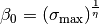 determines
the maximum value of
is the topographic slope,
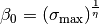 determines
the maximum value of  , and is an
adjustable parameter. Default values in the model are
, and is an
adjustable parameter. Default values in the model are
 and
and  .
.
If the spatial scale of the microtopography is small relative to that of the grid cell, one can assume that the inundated areas are distributed randomly within the grid cell. With this assumption, a result from percolation theory can be used to quantify the fraction of the inundated portion of the grid cell that is interconnected
(69)¶
where  is a threshold below which no single connected
inundated area spans the grid cell and
is a threshold below which no single connected
inundated area spans the grid cell and  is a scaling
exponent. Default values of and are 0.4 and
0.14, respectively. When the inundated fraction of the grid cell
surpasses , the surface water store acts as a linear
reservoir
is a scaling
exponent. Default values of and are 0.4 and
0.14, respectively. When the inundated fraction of the grid cell
surpasses , the surface water store acts as a linear
reservoir
(70)¶
where  is the surface water runoff,
is the surface water runoff,  is a constant,
is a constant,  is the amount of surface water present when
is the amount of surface water present when
 , and is the model time step.
The linear storage coefficent
, and is the model time step.
The linear storage coefficent  is a function of grid cell mean topographic slope where
is the slope in radians.
is a function of grid cell mean topographic slope where
is the slope in radians.
7.3.3. Infiltration¶
The surface moisture flux remaining after surface runoff has been removed,
(71)¶
is divided into inputs to surface water ( ) and
the soil
) and
the soil  . If exceeds the
maximum soil infiltration capacity (kg m-2
s-1),
. If exceeds the
maximum soil infiltration capacity (kg m-2
s-1),
(72)¶
where  is an ice impedance factor (section
7.4), infiltration excess (Hortonian) runoff is generated
is an ice impedance factor (section
7.4), infiltration excess (Hortonian) runoff is generated
(73)¶
and transferred from to  .
After evaporative losses have been removed, these moisture fluxes are
.
After evaporative losses have been removed, these moisture fluxes are
(74)¶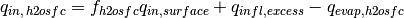
and
(75)¶
The balance of surface water is then calculated as
(76)¶
Bottom drainage from the surface water store
(77)¶
is then added to giving the total infiltration
into the surface soil layer
(78)¶
Infiltration  and explicit surface runoff
are not allowed for glaciers.
and explicit surface runoff
are not allowed for glaciers.
7.4. Soil Water¶
Soil water is predicted from a multi-layer model, in which the vertical soil moisture transport is governed by infiltration, surface and sub-surface runoff, gradient diffusion, gravity, canopy transpiration through root extraction, and interactions with groundwater (Figure 7.1). The following derivation generally follows that of Z.-L. Yang (1998, unpublished manuscript) with modifications by Zeng and Decker (2009).
For one-dimensional vertical water flow in soils, the conservation of mass is stated as
(79)¶
where  is the volumetric soil water content
(mm:sup:3 of water mm-3 of soil),
is the volumetric soil water content
(mm:sup:3 of water mm-3 of soil),  is
time (s), is height above some datum in the soil column (mm)
(positive upwards),
is
time (s), is height above some datum in the soil column (mm)
(positive upwards),  is soil water flux (kg m-2
s-1 or mm s-1) (positive upwards), and
is soil water flux (kg m-2
s-1 or mm s-1) (positive upwards), and
 is a soil moisture sink term (mm of water mm-1
of soil s-1) (ET loss). This equation is solved
numerically by dividing the soil column into multiple layers in the
vertical and integrating downward over each layer with an upper boundary
condition of the infiltration flux into the top soil layer
and a lower boundary condition that depends on the
depth of the water table.
is a soil moisture sink term (mm of water mm-1
of soil s-1) (ET loss). This equation is solved
numerically by dividing the soil column into multiple layers in the
vertical and integrating downward over each layer with an upper boundary
condition of the infiltration flux into the top soil layer
and a lower boundary condition that depends on the
depth of the water table.
The soil water flux in equation can be described by Darcy’s
law
(80)¶
where  is the hydraulic conductivity (mm s-1),
and
is the hydraulic conductivity (mm s-1),
and  is the hydraulic potential (mm). The hydraulic
potential is
is the hydraulic potential (mm). The hydraulic
potential is
(81)¶
where  is the soil matric potential (mm) (which is
related to the adsorptive and capillary forces within the soil matrix),
and
is the soil matric potential (mm) (which is
related to the adsorptive and capillary forces within the soil matrix),
and  is the gravitational potential (mm) (the vertical
distance from an arbitrary reference elevation to a point in the soil).
If the reference elevation is the soil surface, then
is the gravitational potential (mm) (the vertical
distance from an arbitrary reference elevation to a point in the soil).
If the reference elevation is the soil surface, then
 . Letting
. Letting  , Darcy’s law
becomes
, Darcy’s law
becomes
(82)¶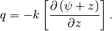
Darcy’s equation can be further manipulated to yield
(83)¶![q=-k\left[\frac{\partial \left(\psi +z\right)}{\partial z} \right]=-k\left(\frac{\partial \psi }{\partial z} +1\right)=-k\left(\frac{\partial \theta }{\partial z} \frac{\partial \psi }{\partial \theta } +1\right).](../../_images/math/fea88aa5279a0f96b6a4c2e338de5df69469553b.png)
Substitution of this equation into equation , with  , yields
the Richards equation
, yields
the Richards equation
(84)¶![\frac{\partial \theta }{\partial t} =\frac{\partial }{\partial z} \left[k\left(\frac{\partial \theta }{\partial z} \frac{\partial \psi }{\partial \theta } \right)+1\right].](../../_images/math/e43644b5dbf4fd3b7464cac8fe61c5d8e130c4b5.png)
Zeng and Decker (2009) note that this -based form of the
Richards equation cannot maintain the hydrostatic equilibrium soil
moisture distribution because of the truncation errors of the
finite-difference numerical scheme. They show that this deficiency can
be overcome by subtracting the equilibrium state from equation as
(85)¶![q=-k\left[\frac{\partial \left(\psi +z-C\right)}{\partial z} \right]](../../_images/math/59c864722573f3c5df4e4d2a42b3138ea5636f61.png)
where  is a constant hydraulic potential above the water table
is a constant hydraulic potential above the water table

(86)¶![C=\psi _{E} +z=\psi _{sat} \left[\frac{\theta _{E} \left(z\right)}{\theta _{sat} } \right]^{-B} +z=\psi _{sat} +z_{\nabla }](../../_images/math/35a997e9be01533168728ba71ac2d50ee815eb0b.png)
so that
(87)¶![q=-k\left[\frac{\partial \left(\psi -\psi _{E} \right)}{\partial z} \right]](../../_images/math/4d7e05326a87706c1a06fa3fcd21b26ec5228919.png)
where  is the equilibrium soil matric potential
(mm). Substitution of equations and into equation yields Zeng and
Decker’s (2009) modified Richards equation
is the equilibrium soil matric potential
(mm). Substitution of equations and into equation yields Zeng and
Decker’s (2009) modified Richards equation
(88)¶![\frac{\partial \theta }{\partial t} =\frac{\partial }{\partial z} \left[k\left(\frac{\partial \left(\psi -\psi _{E} \right)}{\partial z} \right)\right]-Q](../../_images/math/8125d86c3e89606c2afe945dfb4e10d5e0939708.png)
where the soil moisture sink term is now included.
7.4.1. Hydraulic Properties¶
The hydraulic conductivity  (mm s-1) and
the soil matric potential
(mm s-1) and
the soil matric potential  (mm) for layer
vary with volumetric soil water
(mm) for layer
vary with volumetric soil water  and soil texture.
As with the soil thermal properties (section 6.3) the hydraulic
properties of the soil are assumed to be a weighted combination of the
mineral properties, which are determined according to sand and clay
contents based on work by Clapp and Hornberger (1978) and Cosby et al.
(1984), and organic properties of the soil (Lawrence and Slater 2008).
and soil texture.
As with the soil thermal properties (section 6.3) the hydraulic
properties of the soil are assumed to be a weighted combination of the
mineral properties, which are determined according to sand and clay
contents based on work by Clapp and Hornberger (1978) and Cosby et al.
(1984), and organic properties of the soil (Lawrence and Slater 2008).
The hydraulic conductivity is defined at the depth of the interface of
two adjacent layers  (Figure 7.3) and is a function
of the saturated hydraulic conductivity
(Figure 7.3) and is a function
of the saturated hydraulic conductivity
![k_{sat} \left[z_{h,\, i} \right]](../../_images/math/6e559173da81f657eb2d2a2d0b5ef7a651b441e3.png) , the liquid volumetric soil
moisture of the two layers and
, the liquid volumetric soil
moisture of the two layers and
 and an ice impedance factor
and an ice impedance factor

(89)¶![k\left[z_{h,\, i} \right]=\left\{\begin{array}{l} {\Theta _{ice} k_{sat} \left[z_{h,\, i} \right]\left[\frac{0.5\left(\theta _{\, i} +\theta _{\, i+1} \right)}{0.5\left(\theta _{sat,\, i} +\theta _{sat,\, i+1} \right)} \right]^{2B_{i} +3} \qquad 1\le i\le N_{levsoi} -1} \\ {\Theta _{ice} k_{sat} \left[z_{h,\, i} \right]\left(\frac{\theta _{\, i} }{\theta _{sat,\, i} } \right)^{2B_{i} +3} \qquad i=N_{levsoi} } \end{array}\right\}.](../../_images/math/d37c1b7c8d7d34705bfc7d03369ee5022215405e.png)
The ice impedance factor is a function of ice content, and is meant to
quantify the increased tortuosity of the water flow when part of the
pore space is filled with ice. Swenson et al. (2012) used a power law
form  where
where
 and
and
 is the
ice-filled fraction of the pore space.
is the
ice-filled fraction of the pore space.
Because the hydraulic properties of mineral and organic soil may differ significantly, the bulk hydraulic properties of each soil layer are computed as weighted averages of the properties of the mineral and organic components. The water content at saturation (i.e. porosity) is
(90)¶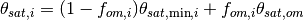
where  is the soil organic matter fraction,
is the soil organic matter fraction,
 (Farouki 1981; Letts et al. 2000) is the
porosity of organic matter and the porosity of the mineral soil
(Farouki 1981; Letts et al. 2000) is the
porosity of organic matter and the porosity of the mineral soil
 is
is
(91)¶
The exponent “ ” is
” is
(92)¶
where  (Letts et al. 2000) and
(Letts et al. 2000) and
(93)¶
The soil matric potential (mm) is defined at the node depth
 of each layer (Figure 7.3)
of each layer (Figure 7.3)
(94)¶
where the saturated soil matric potential (mm) is
(95)¶
where  mm (Letts et al. 2000) is the
saturated organic matter matric potential and the saturated mineral soil
matric potential
mm (Letts et al. 2000) is the
saturated organic matter matric potential and the saturated mineral soil
matric potential  is
is
(96)¶
The saturated hydraulic conductivity,
(mm s-1), for
organic soils ( ) may be two to three orders of
magnitude larger than that of mineral soils (
) may be two to three orders of
magnitude larger than that of mineral soils ( ).
Bulk soil layer values of
).
Bulk soil layer values of  calculated as weighted
averages based on
calculated as weighted
averages based on  may therefore be determined primarily
by the organic soil properties even for values of as low
as 1 %. To better represent the influence of organic soil material on
the grid cell average saturated hydraulic conductivity, the soil organic
matter fraction is further subdivided into “connected” and “unconnected”
fractions using a result from percolation theory (Stauffer and Aharony
1994, Berkowitz and Balberg 1992). Assuming that the organic and mineral
fractions are randomly distributed throughout a soil layer, percolation
theory predicts that above a threshold value
may therefore be determined primarily
by the organic soil properties even for values of as low
as 1 %. To better represent the influence of organic soil material on
the grid cell average saturated hydraulic conductivity, the soil organic
matter fraction is further subdivided into “connected” and “unconnected”
fractions using a result from percolation theory (Stauffer and Aharony
1994, Berkowitz and Balberg 1992). Assuming that the organic and mineral
fractions are randomly distributed throughout a soil layer, percolation
theory predicts that above a threshold value
 , connected flow pathways consisting of
organic material only exist and span the soil space. Flow through these
pathways interacts only with organic material, and thus can be described
by . This fraction of the grid cell is given by
, connected flow pathways consisting of
organic material only exist and span the soil space. Flow through these
pathways interacts only with organic material, and thus can be described
by . This fraction of the grid cell is given by
(97)¶
where  ,
,  , and
, and
 . In
the unconnected portion of the grid cell,
. In
the unconnected portion of the grid cell,
 , the saturated
hydraulic conductivity is assumed to correspond to flow pathways that
pass through the mineral and organic components in series
, the saturated
hydraulic conductivity is assumed to correspond to flow pathways that
pass through the mineral and organic components in series
(98)¶
where saturated hydraulic conductivity for mineral soil depends on soil texture (Cosby et al. 1984) as
(99)¶![k_{sat,\, \min } \left[z_{h,\, i} \right]=0.0070556\times 10^{-0.884+0.0153\left(\% sand\right)_{i} } .](../../_images/math/e0b013ee0e5918811e988cf8125b2dd035267b5a.png)
The bulk soil layer saturated hydraulic conductivity is then computed as
(100)¶![k_{sat} \left[z_{h,\, i} \right]=f_{uncon,\, i} k_{sat,\, uncon} \left[z_{h,\, i} \right]+(1-f_{uncon,\, i} )k_{sat,\, om} \left[z_{h,\, i} \right].](../../_images/math/0f031841e14d61a12a8ec65cda789db4600d077b.png)
7.4.2. Numerical Solution¶
With reference to Figure 7.3, the equation for conservation of mass (equation ) can be integrated over each layer as
(101)¶
Note that the integration limits are negative since is defined
as positive upward from the soil surface. This equation can be written
as
(102)¶
where  is the flux of water across interface
,
is the flux of water across interface
,  is the flux of water across
interface
is the flux of water across
interface  , and
, and  is a layer-averaged
soil moisture sink term (ET loss) defined as positive for flow out of
the layer (mm s-1). Taking the finite difference with
time and evaluating the fluxes implicitly at time
is a layer-averaged
soil moisture sink term (ET loss) defined as positive for flow out of
the layer (mm s-1). Taking the finite difference with
time and evaluating the fluxes implicitly at time  yields
yields
(103)¶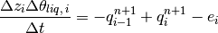
where
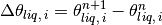
is the change in volumetric soil liquid water of layer in time
and is the thickness of layer
(mm).
The water removed by transpiration in each layer is a
function of the total transpiration  (Chapter 5) and
the effective root fraction
(Chapter 5) and
the effective root fraction 
(104)¶
Figure 7.3. Schematic diagram of numerical scheme used to solve for soil water fluxes.
Shown are three soil layers, , , and .
The soil matric potential  and volumetric soil water
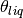 are defined at the layer node depth .
The hydraulic conductivity
and volumetric soil water
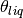 are defined at the layer node depth .
The hydraulic conductivity ![k\left[z_{h} \right]](../../_images/math/8689d50e7745af394c8e13b22271567a256f3940.png) is defined at
the interface of two layers . The layer thickness is
. The soil water fluxes and
are defined as positive upwards. The soil moisture sink
term
is defined at
the interface of two layers . The layer thickness is
. The soil water fluxes and
are defined as positive upwards. The soil moisture sink
term  (ET loss) is defined as positive for flow out of the
layer.
(ET loss) is defined as positive for flow out of the
layer.

Note that because more than one plant functional type (PFT) may share a
soil column, the transpiration is a weighted sum of
transpiration from all PFTs whose weighting depends on PFT area as
(105)¶
where  is the number of PFTs sharing a soil column,
is the number of PFTs sharing a soil column,
 is the transpiration from the
is the transpiration from the
 PFT on the column, and
PFT on the column, and  is
the relative area of the PFT with respect to the column.
The effective root fraction is also a column-level
quantity that is a weighted sum over all PFTs. The weighting depends on
the per unit area transpiration of each PFT and its relative area as
is
the relative area of the PFT with respect to the column.
The effective root fraction is also a column-level
quantity that is a weighted sum over all PFTs. The weighting depends on
the per unit area transpiration of each PFT and its relative area as
(106)¶
where  is the effective root
fraction for the PFT
is the effective root
fraction for the PFT
(107)¶
and  is the fraction of roots in layer
(Chapter 8),
is the fraction of roots in layer
(Chapter 8),  is a soil
dryness or plant wilting factor for layer (Chapter 8), and
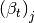 is a wetness factor for the total
soil column for the PFT (Chapter 8).
is a soil
dryness or plant wilting factor for layer (Chapter 8), and
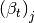 is a wetness factor for the total
soil column for the PFT (Chapter 8).
The soil water fluxes in equation , which are a function of
and  because of
their dependence on hydraulic conductivity and soil matric potential,
can be linearized about using a Taylor series expansion
as
because of
their dependence on hydraulic conductivity and soil matric potential,
can be linearized about using a Taylor series expansion
as
(108)¶
(109)¶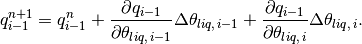
Substitution of these expressions for  and
and
 into equation results in a general tridiagonal
equation set of the form
into equation results in a general tridiagonal
equation set of the form
(110)¶
where
(111)¶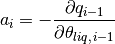
(112)¶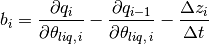
(113)¶
(114)¶
The tridiagonal equation set is solved over
 where the layer
where the layer
 is a virtual layer representing the aquifer.
is a virtual layer representing the aquifer.
The finite-difference forms of the fluxes and partial derivatives in equations - can be obtained from equation as
(115)¶![q_{i-1}^{n} =-k\left[z_{h,\, i-1} \right]\left[\frac{\left(\psi _{i-1} -\psi _{i} \right)+\left(\psi _{E,\, i} -\psi _{E,\, i-1} \right)}{z_{i} -z_{i-1} } \right]](../../_images/math/34debc3790545bc4d9b33a97d750086068bc6340.png)
(116)¶![q_{i}^{n} =-k\left[z_{h,\, i} \right]\left[\frac{\left(\psi _{i} -\psi _{i+1} \right)+\left(\psi _{E,\, i+1} -\psi _{E,\, i} \right)}{z_{i+1} -z_{i} } \right]](../../_images/math/b41bcd6eb0a0d3e624dcb80a9add40656870bf87.png)
(117)¶![\frac{\partial q_{i-1} }{\partial \theta _{liq,\, i-1} } =-\left[\frac{k\left[z_{h,\, i-1} \right]}{z_{i} -z_{i-1} } \frac{\partial \psi _{i-1} }{\partial \theta _{liq,\, i-1} } \right]-\frac{\partial k\left[z_{h,\, i-1} \right]}{\partial \theta _{liq,\, i-1} } \left[\frac{\left(\psi _{i-1} -\psi _{i} \right)+\left(\psi _{E,\, i} -\psi _{E,\, i-1} \right)}{z_{i} -z_{i-1} } \right]](../../_images/math/294b0478a0e0690a11dd0f0e30983f085ebda60a.png)
(118)¶![\frac{\partial q_{i-1} }{\partial \theta _{liq,\, i} } =\left[\frac{k\left[z_{h,\, i-1} \right]}{z_{i} -z_{i-1} } \frac{\partial \psi _{i} }{\partial \theta _{liq,\, i} } \right]-\frac{\partial k\left[z_{h,\, i-1} \right]}{\partial \theta _{liq,\, i} } \left[\frac{\left(\psi _{i-1} -\psi _{i} \right)+\left(\psi _{E,\, i} -\psi _{E,\, i-1} \right)}{z_{i} -z_{i-1} } \right]](../../_images/math/50f786bd72b491122a7e547009e239ccdfe2ce51.png)
(119)¶![\frac{\partial q_{i} }{\partial \theta _{liq,\, i} } =-\left[\frac{k\left[z_{h,\, i} \right]}{z_{i+1} -z_{i} } \frac{\partial \psi _{i} }{\partial \theta _{liq,\, i} } \right]-\frac{\partial k\left[z_{h,\, i} \right]}{\partial \theta _{liq,\, i} } \left[\frac{\left(\psi _{i} -\psi _{i+1} \right)+\left(\psi _{E,\, i+1} -\psi _{E,\, i} \right)}{z_{i+1} -z_{i} } \right]](../../_images/math/9abc3d3a9b63fe5de4661679dacaa742959d3e67.png)
(120)¶![\frac{\partial q_{i} }{\partial \theta _{liq,\, i+1} } =\left[\frac{k\left[z_{h,\, i} \right]}{z_{i+1} -z_{i} } \frac{\partial \psi _{i+1} }{\partial \theta _{liq,\, i+1} } \right]-\frac{\partial k\left[z_{h,\, i} \right]}{\partial \theta _{liq,\, i+1} } \left[\frac{\left(\psi _{i} -\psi _{i+1} \right)+\left(\psi _{E,\, i+1} -\psi _{E,\, i} \right)}{z_{i+1} -z_{i} } \right].](../../_images/math/61fe2591d97391695f83fa0385d2865b09918716.png)
The derivatives of the soil matric potential at the node depth are derived from equation
(121)¶
(122)¶
(123)¶
with the constraint
 .
.
The derivatives of the hydraulic conductivity at the layer interface are derived from equation
(124)¶![\begin{array}{l} {\frac{\partial k\left[z_{h,\, i-1} \right]}{\partial \theta _{liq,\, i-1} } =\frac{\partial k\left[z_{h,\, i-1} \right]}{\partial \theta _{liq,\, i} } =\left(1-\frac{f_{frz,\, i-1} +f_{frz,\, i} }{2} \right)\left(2B_{i-1} +3\right)k_{sat} \left[z_{h,\, i-1} \right]\times } \\ {\qquad \left[\frac{0.5\left(\theta _{\, i-1} +\theta _{\, i} \right)}{0.5\left(\theta _{sat,\, i-1} +\theta _{sat,\, i} \right)} \right]^{2B_{i-1} +2} \left(\frac{0.5}{0.5\left(\theta _{sat,\, i-1} +\theta _{sat,\, i} \right)} \right)} \end{array}](../../_images/math/3ed3fdde823a6c88039357f7f41f1833926bfe01.png)
(125)¶![\begin{array}{l} {\frac{\partial k\left[z_{h,\, i} \right]}{\partial \theta _{liq,\, i} } =\frac{\partial k\left[z_{h,\, i} \right]}{\partial \theta _{liq,\, i+1} } =\left(1-\frac{f_{frz,\, i} +f_{frz,\, i+1} }{2} \right)\left(2B_{i} +3\right)k_{sat} \left[z_{h,\, i} \right]\times } \\ {\qquad \left[\frac{0.5\left(\theta _{\, i} +\theta _{\, i+1} \right)}{0.5\left(\theta _{sat,\, i} +\theta _{sat,\, i+1} \right)} \right]^{2B_{i} +2} \left(\frac{0.5}{0.5\left(\theta _{sat,\, i} +\theta _{sat,\, i+1} \right)} \right)} \end{array}.](../../_images/math/9c511bc8e0767099469379debad45095d8fbadc9.png)
7.4.2.1. Equilibrium soil matric potential and volumetric moisture¶
The equilibrium soil matric potential can be derived
from equation as
(126)¶
and the equilibrium volumetric water content
 at depth can also be
derived as
at depth can also be
derived as
(127)¶
Here, the soil matric potentials, the water table depth
and the soil depths have units of mm. For the
finite-difference scheme, a layer-average equilibrium volumetric water
content is used in equation and can be obtained from
(128)¶
which when integrated yields
(129)¶![\overline{\theta _{E,\, i} }=\frac{\theta _{sat,\, i} \psi _{sat,\, i} }{\left(z_{h,\, i} -z_{h,\, i-1} \right)\left(1-\frac{1}{B_{i} } \right)} \left[\left(\frac{\psi _{sat,\, i} -z_{\nabla } +z_{h,\, i} }{\psi _{sat,\, i} } \right)^{1-\frac{1}{B_{i} } } -\left(\frac{\psi _{sat,\, i} -z_{\nabla } +z_{h,\, i-1} }{\psi _{sat,\, i} } \right)^{1-\frac{1}{B_{i} } } \right].](../../_images/math/a25bb43043d79dd5e8cb1ca61def38c9942a9584.png)
Equation is valid when the water table is deeper
than both interface depths and
. Since the water table can be within the soil
column, the equation is modified if the water table is within soil layer
( ) as a weighted
average of the saturated part and the unsaturated part
) as a weighted
average of the saturated part and the unsaturated part
(130)¶
where  and the unsaturated part
and the unsaturated part  is
is
(131)¶![\overline{\theta _{E,\, unsat,\, i} }=\frac{\theta _{sat,\, i} \psi _{sat,\, i} }{\left(z_{\nabla } -z_{h,\, i-1} \right)\left(1-\frac{1}{B_{i} } \right)} \left[1-\left(\frac{\psi _{sat,\, i} -z_{\nabla } +z_{h,\, i-1} }{\psi _{sat,\, i} } \right)^{1-\frac{1}{B_{i} } } \right].](../../_images/math/3cdb5fc82bbf31dae577e3d1461be32012d5ab19.png)
If  , then
, then
 .
If the water table is below the soil column
(
.
If the water table is below the soil column
( ), an equilibrium volumetric
soil moisture is calculated for a virtual layer
as
), an equilibrium volumetric
soil moisture is calculated for a virtual layer
as
(132)¶![\overline{\theta _{E,\, i=N_{levsoi+1} } }=\frac{\theta _{sat,i-1} \psi _{sat,\, i-1} }{\left(z_{\nabla } -z_{h,\, i-1} \right)\left(1-\frac{1}{B_{i-1} } \right)} \left[1-\left(\frac{\psi _{sat,\, i-1} -z_{\nabla } +z_{h,\, i-1} }{\psi _{sat,\, i-1} } \right)^{1-\frac{1}{B_{i-1} } } \right]](../../_images/math/c8b3a683820367b3a004387cfe2535be3e5b76d8.png)
The equilibrium volumetric soil moisture is constrained by
(133)¶
The equilibrium soil matric potential is then
(134)¶
7.4.2.2. Equation set for layer  ¶
¶
For the top soil layer (), the boundary condition is the
infiltration rate (section 7.3),
 , and the water balance equation
is
, and the water balance equation
is
(135)¶
After grouping like terms, the coefficients of the tridiagonal set of
equations for are
(136)¶
(137)¶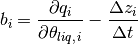
(138)¶
(139)¶
7.4.2.3. Equation set for layers  ¶
¶
The coefficients of the tridiagonal set of equations for
are
(140)¶
(141)¶
(142)¶
(143)¶
7.4.2.4. Equation set for layers  ¶
¶
For the lowest soil layer ( ), the bottom boundary
condition depends on the depth of the water table. If the water table is
within the soil column (
), the bottom boundary
condition depends on the depth of the water table. If the water table is
within the soil column ( ),
a zero-flux bottom boundary condition is applied (
),
a zero-flux bottom boundary condition is applied ( )
and the coefficients of the tridiagonal set of equations for
are
)
and the coefficients of the tridiagonal set of equations for
are
(144)¶
(145)¶
(146)¶
(147)¶
The coefficients for the aquifer layer are then
(148)¶
(149)¶
(150)¶
(151)¶
If the water table is below the soil column
( ), the coefficients for
are
(152)¶
(153)¶
(154)¶
(155)¶
The terms are evaluated using
(156)¶![\psi _{N_{levsoi} +1} =\psi _{sat,\, N_{levsoi} } \left[s_{N_{levsoi} +1} \right]^{-B_{N_{levsoi} } } \ge -1\times 10^{8}](../../_images/math/3e02d436aaeee865cc3476c153dc0889b8373b03.png)
(157)¶
where
(158)¶
 is evaluated from equations and ,
is evaluated from equations and ,
and
(159)¶
The coefficients for the aquifer layer are then
(160)¶
(161)¶
(162)¶
(163)¶
Upon solution of the tridiagonal equation set (Press et al. 1992), the liquid water contents are updated as follows
(164)¶
The volumetric water content is
(165)¶
7.5. Frozen Soils and Perched Water Table¶
When soils freeze, the power-law form of the ice impedance factor (section 7.4.1) can greatly decrease the hydraulic conductivity of the soil, leading to nearly impermeable soil layers. When unfrozen soil layers are present above relatively ice-rich frozen layers, the possibility exists for perched saturated zones. Lateral drainage from perched saturated regions is parameterized as a function of the thickness of the saturated zone
(166)¶
where  depends on topographic slope and soil
hydraulic conductivity,
depends on topographic slope and soil
hydraulic conductivity,
(167)¶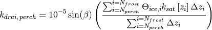
where is an ice impedance factor determined from
the ice content of the soil layers interacting with the water table
(section 7.6), is the mean grid cell topographic slope in
radians,  is the depth to the frost table, and
is the depth to the frost table, and
 is the depth to the perched saturated zone.
The frost table is defined as the shallowest frozen
layer having an unfrozen layer above it, while the perched water table
is defined as the depth at which the
volumetric water content drops below a specified threshold. The default
threshold is set to 0.9. Drainage from the perched saturated zone
is the depth to the perched saturated zone.
The frost table is defined as the shallowest frozen
layer having an unfrozen layer above it, while the perched water table
is defined as the depth at which the
volumetric water content drops below a specified threshold. The default
threshold is set to 0.9. Drainage from the perched saturated zone
 is removed from layers
is removed from layers  through
through  , which are the layers containing
and, respectively.
, which are the layers containing
and, respectively.
7.6. Groundwater-Soil Water Interactions¶
Drainage or sub-surface runoff is based on the SIMTOP scheme (Niu et al.
2005) with a modification to account for reduced drainage in frozen
soils. In the work of Niu et al. (2005), the drainage
(kg m-2 s-1) was formulated as
(168)¶
Here, the water table depth has units of meters. To
restrict drainage in frozen soils, Niu et al. (2005) added the following
condition
(169)¶
In preliminary testing it was found that a more gradual restriction of drainage was required so that the water table depth remained dynamic under partially frozen conditions. The following modification is made to equation
(170)¶
where is an ice impedance factor determined from
the ice content of the soil layers interacting with the water table
(171)¶
where is an adjustable parameter,  is the
index of the layer directly above the water table,
is the
ice-filled fraction of the pore space of soil layer (kg
m-2), and is the layer thickness
(mm). This expression is functionally the same as that used to determine
the ice impedance factor in section 7.4. In equation , the decay factor
is the
index of the layer directly above the water table,
is the
ice-filled fraction of the pore space of soil layer (kg
m-2), and is the layer thickness
(mm). This expression is functionally the same as that used to determine
the ice impedance factor in section 7.4. In equation , the decay factor
 m-1 and the maximum drainage when
the water table depth is at the surface
m-1 and the maximum drainage when
the water table depth is at the surface
 kg m-2
s-1 , where is the mean grid cell
topographic slope in radians, were determined for global simulations
through sensitivity analysis and comparison with observed runoff.
kg m-2
s-1 , where is the mean grid cell
topographic slope in radians, were determined for global simulations
through sensitivity analysis and comparison with observed runoff.
Determination of water table depth is based on work
by Niu et al. (2007). In this approach, a groundwater component is added
in the form of an unconfined aquifer lying below the soil column (Figure
7.1). The groundwater solution is dependent on whether the water table
is within or below the soil column. The water stored in the unconfined
aquifer  has a prescribed maximum value (5000 mm). When
the water table is within the soil column, is constant
because there is no water exchange between the soil column and the
underlying aquifer. In this case, recharge to the water table is
diagnosed by applying Darcy’s law across the water table
has a prescribed maximum value (5000 mm). When
the water table is within the soil column, is constant
because there is no water exchange between the soil column and the
underlying aquifer. In this case, recharge to the water table is
diagnosed by applying Darcy’s law across the water table
(172)¶
where  is the matric potential at the water
table and
is the matric potential at the water
table and![k_{aq} =\Theta _{ice,jwt+1} k\left[z_{jwt+1} \right]](../../_images/math/eb01beeeb481ff0d339d79512b2330e5c80c5743.png) is the hydraulic conductivity of the layer containing the water table.
Change in the water table is then calculated as the difference between
recharge and drainage, scaled by the specific yield of the layer
containing the water table
is the hydraulic conductivity of the layer containing the water table.
Change in the water table is then calculated as the difference between
recharge and drainage, scaled by the specific yield of the layer
containing the water table
(173)¶
The specific yield,  , which depends on the soil
properties and the water table location, is derived by taking the
difference between two equilibrium soil moisture profiles whose water
tables differ by an infinitesimal amount
, which depends on the soil
properties and the water table location, is derived by taking the
difference between two equilibrium soil moisture profiles whose water
tables differ by an infinitesimal amount
(174)¶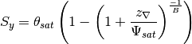
where B is the Clapp-Hornberger exponent. Because is a
function of the soil properties, it results in water table dynamics that
are consistent with the soil water fluxes described in section 7.4.
For the case when the water table is below the soil column, the change
in water stored in the unconfined aquifer (mm) is updated
as
(175)¶
and the water table is updated using equation with the specific yield of
layer .
The recharge rate is defined as positive when water enters the aquifer
(176)¶
where
 is the change in liquid water content for layer
calculated from the solution of the soil water equations (section 7.4),
and
is the change in liquid water content for layer
calculated from the solution of the soil water equations (section 7.4),
and  (mm) is
(mm) is
(177)¶
After the above calculations, two numerical adjustments are implemented
to keep the liquid water content of each soil layer
( ) within physical constraints of
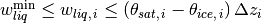
where  (mm). First, beginning with the
bottom soil layer , any excess liquid water in each
soil layer
(
(mm). First, beginning with the
bottom soil layer , any excess liquid water in each
soil layer
( )
is successively added to the layer above. Any excess liquid water that
remains after saturating the entire soil column (plus a maximum surface
ponding depth
)
is successively added to the layer above. Any excess liquid water that
remains after saturating the entire soil column (plus a maximum surface
ponding depth  kg m-2), is
added to drainage . Second, to prevent negative
, each layer is successively brought up to
kg m-2), is
added to drainage . Second, to prevent negative
, each layer is successively brought up to
 by taking the required amount of
water from the layer below. If this results in
by taking the required amount of
water from the layer below. If this results in
 , then the layers above
are searched in succession for the required amount of water
(
, then the layers above
are searched in succession for the required amount of water
( ) and removed from
those layers subject to the constraint
) and removed from
those layers subject to the constraint
 . If sufficient water is not
found, then the water is removed from
. If sufficient water is not
found, then the water is removed from  and
.
and
.
The soil surface layer liquid water and ice contents are then updated
for dew , frost , or sublimation
(section 5.4) as
(178)¶
(179)¶
(180)¶
Sublimation of ice is limited to the amount of ice available.
7.7. Runoff from glaciers and snow-capped surfaces¶
All surfaces are constrained to have a snow water equivalent
 kg m-2. For snow-capped
surfaces, the solid and liquid precipitation reaching the snow surface
and dew in solid or liquid form, is separated into solid
and liquid
kg m-2. For snow-capped
surfaces, the solid and liquid precipitation reaching the snow surface
and dew in solid or liquid form, is separated into solid
and liquid  runoff terms
runoff terms
(181)¶
(182)¶
and snow pack properties are unchanged. The
runoff is sent to the River Transport Model (RTM) (Chapter 11) where it
is routed to the ocean as an ice stream and, if applicable, the ice is
melted there.
For snow-capped surfaces other than glaciers and lakes the
runoff is assigned to the glaciers and lakes
runoff term (e.g.  ).
For glacier surfaces the runoff term is calculated
from the residual of the water balance
).
For glacier surfaces the runoff term is calculated
from the residual of the water balance
(183)¶
where  and
and  are the water balances
at the beginning and ending of the time step defined as
are the water balances
at the beginning and ending of the time step defined as
(184)¶
Currently, glaciers are non-vegetated and  .
The contribution of lake runoff to is described in
section 9.6.3. The runoff term may be negative for
glaciers and lakes, which reduces the total amount of runoff available
to the RTM.
.
The contribution of lake runoff to is described in
section 9.6.3. The runoff term may be negative for
glaciers and lakes, which reduces the total amount of runoff available
to the RTM.
7.8. The Variable Infiltration Capacity parameterizations as a hydrologic option¶
The hydrologic parameterizations from the Variable Infiltration Capacity (VIC) land surface model (Liang et al. 1994) have been implemented as a hydrologic option. VIC includes two different time scales of runoff generation. To capture such dynamics, the soil column in the original VIC model (http://www.hydro.washington.edu/Lettenmaier/Models/VIC/Overview/ModelOverview.shtml) is typically divided into three layers with variable soil depths. The upper two layers are designed to represent the dynamic responses of the soil to rainfall events for surface runoff generation, and the lower layer is used to characterize the seasonal soil moisture behavior and subsurface runoff generation. The implementation of the VIC parameterizations are as described in Li et al. (2011) except where updated for consistency with modifications to CLM hydrology in CLM4.5. Note that unless explicitly mentioned in this section, any descriptions from sections 7.1-7.7 are intact and remain valid when the VIC hydrology option is turned on.
Three VIC soil layers are defined by aggregating multiple layers in the
CLM soil column with thicknesses of  ,
,
 ,
,
 , respectively. At each time
step, the soil moisture profile is determined following the algorithms
detailed in section 7.4, and aggregated to the three VIC layers for
runoff generation calculations. The surface runoff generated by the
saturation excess runoff mechanism, qover, is
calculated using equation , but with the fractional saturated area
defined as
, respectively. At each time
step, the soil moisture profile is determined following the algorithms
detailed in section 7.4, and aggregated to the three VIC layers for
runoff generation calculations. The surface runoff generated by the
saturation excess runoff mechanism, qover, is
calculated using equation , but with the fractional saturated area
defined as
(185)¶
where  and
and  are calculated as
are calculated as
 and
and
 , respectively, and
represent the soil moisture (kg m-2) and maximum soil
moisture (kg m-2) in the top two VIC layers combined.
, respectively, and
represent the soil moisture (kg m-2) and maximum soil
moisture (kg m-2) in the top two VIC layers combined.
In equation , it is hypothesized that the spatial heterogeneity of soil
moisture holding capacity in the top VIC layers can be represented by a
soil moisture holding capacity curve as defined in equation , in which
 is a parameter that controls the shape of the curve.
That is, if one assumes that a grid cell (or soil column in this case)
is composed of many pixels (or points) with varying soil moisture
capacity, this variation across the grid cell can be represented
conceptually as
is a parameter that controls the shape of the curve.
That is, if one assumes that a grid cell (or soil column in this case)
is composed of many pixels (or points) with varying soil moisture
capacity, this variation across the grid cell can be represented
conceptually as
(186)¶
where and  are the point and maximum point soil
moisture holding capacities (kg m-2), respectively;
are the point and maximum point soil
moisture holding capacities (kg m-2), respectively;
 is the fraction of a grid cell for which the soil moisture
holding capacity is less than or equal to ; and
is the fraction of a grid cell for which the soil moisture
holding capacity is less than or equal to ; and
 . When is equal to
, the corresponding point soil moisture holding capacity
is denoted as
. When is equal to
, the corresponding point soil moisture holding capacity
is denoted as  . The maximum soil infiltration capacity (kg
m-2 s-1) in equation becomes
. The maximum soil infiltration capacity (kg
m-2 s-1) in equation becomes
(187)¶![q_{inf,\, max} =\left\{\begin{array}{l} {\left(1-f_{sat} \right)\theta _{ice,\, top} \left(\frac{w_{m,\, top} -w_{top} }{\Delta t} \right)\qquad i_{o} +q_{in,\, soil} \Delta t\ge i_{m} } \\ {\left(1-f_{sat} \right)\frac{\theta _{ice,\, top} }{\Delta t} \left\{\begin{array}{l} {\left(w_{m,\, top} -w_{top} \right)-w_{m,\, top} \times } \\ {\left[1-\max \left(1,\, \frac{\left(i_{o} +q_{in,\, soil} \Delta t\right)}{i_{m} } \right)^{1+b_{inf} } \right]} \end{array}\right\}\qquad i_{o} +q_{in,\, soil} \Delta t<i_{m} } \end{array}\right\}](../../_images/math/0701c38edc028345dc032d860b300ead64ad8943.png)
where  is an ice impedance factor
determined from the ice content of the top two VIC layers combined,
similar to the one used in equation . Interested readers are referred to
Wood et al. (1992) for a schematic representation of equation and
derivations associated with equations , , and .
is an ice impedance factor
determined from the ice content of the top two VIC layers combined,
similar to the one used in equation . Interested readers are referred to
Wood et al. (1992) for a schematic representation of equation and
derivations associated with equations , , and .
The subsurface runoff in equation is parameterized as
(188)¶![q_{drai}={\mathrm{\Theta }}_{ice,bot}\left[ \begin{array}{c} \frac{D_sD_{smax}}{W_sw_{m,bot}}w_{bot}+ \\
max\left(0,\frac{w_{bot}-W_sw_{m,bot}}{{w_{m,bot}-W}_sw_{m,bot}}\right)\left(D_{smax}-\frac{D_sD_{smax}}{W_s}\right) \end{array}
\right]/\mathrm{\Delta }t](../../_images/math/2e275e4f0fd0084b46bf5ee6403036027bcced09.png)
where  and
and  are the soil moisture (kg
m-2) and maximum soil moisture (kg m-2) in
the bottom VIC layer, respectively,
are the soil moisture (kg
m-2) and maximum soil moisture (kg m-2) in
the bottom VIC layer, respectively,  is the maximum
subsurface flow rate (kg m-2 s-1),
is the maximum
subsurface flow rate (kg m-2 s-1),
 is a fraction of ,
is a fraction of ,  is a fraction
of , and
is a fraction
of , and  is an ice
impedance factor determined from the ice content of the bottom VIC
layer, similar to the ones in equations and .
is an ice
impedance factor determined from the ice content of the bottom VIC
layer, similar to the ones in equations and .
As the VIC parameterizations are based on conceptual models, Huang and
Liang (2006) recommended calibrating the VIC parameters, including
, , , , and the
second and third layer soil thicknesses using observations. In this
implementation, the thicknesses of the VIC soil layers are fixed to
maintain consistency with the soil water algorithms in section 7.4. The
other four parameters, , ,
, and are prescribed and are included in the CLM surface
dataset. Users can provide calibrated parameter values determined
manually or automatically by modifying the surface dataset. Note that
the units of on the surface dataset are mm
d-1 (the traditional units for other standard VIC
applications) which are then converted to kg m-2
s-1 for use in CLM. A preliminary calibration was
performed by perturbing the three parameters ,
, and , and fixing  globally.
The parameter space for , , and
was sampled using the global sensitivity analysis framework
described by Hou et al. (2012) to produce 64 combinations of parameter
values based on a priori information about the parameters. For each
set of parameter values, a global simulation was performed using the
compset I_2000 (i.e., driven by satellite phenology) at a resolution of
0.9ox1.25o on the basis of the
development tag betr_m_sci10_clm45sci13_clm4_0_54. At each model
grid cell, the set of , , and
values corresponding to the simulation that produced the
lowest absolute bias compared to the climatological mean annual total
runoff from the Global Runoff Data Center (GRDC) was selected as the
calibrated values. These values are provided only as a reference due to
the preliminary nature of the calibration. Interested users of the VIC
hydrology option are encouraged to calibrate the parameters for their
applications for improved performance.
globally.
The parameter space for , , and
was sampled using the global sensitivity analysis framework
described by Hou et al. (2012) to produce 64 combinations of parameter
values based on a priori information about the parameters. For each
set of parameter values, a global simulation was performed using the
compset I_2000 (i.e., driven by satellite phenology) at a resolution of
0.9ox1.25o on the basis of the
development tag betr_m_sci10_clm45sci13_clm4_0_54. At each model
grid cell, the set of , , and
values corresponding to the simulation that produced the
lowest absolute bias compared to the climatological mean annual total
runoff from the Global Runoff Data Center (GRDC) was selected as the
calibrated values. These values are provided only as a reference due to
the preliminary nature of the calibration. Interested users of the VIC
hydrology option are encouraged to calibrate the parameters for their
applications for improved performance.